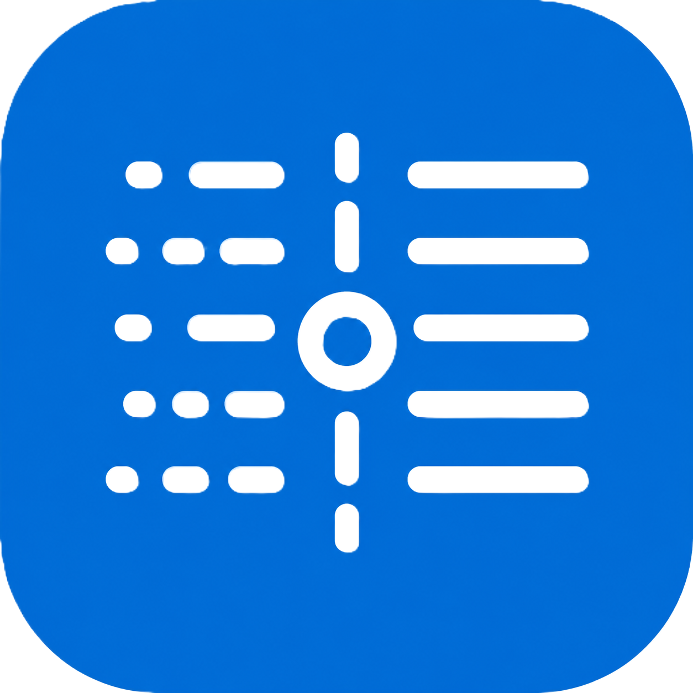

A local-first corpus tool, built in Rust.
CorpusWright is a local-first desktop workbench for preparing, inspecting, and exploring text corpora, with frequency lists, KWIC concordances, collocates, document-spread diagnostics, and reproducible records of every processing step.
Downloads
Experimental alpha. Windows, macOS, and Linux builds are listed on the release page where available; unsigned Windows and macOS builds may prompt a warning before running.
Reproducible
Every export ships a manifest: cleaning configuration, tokeniser settings, and SHA-256 checksums of every source and processed file.
Statistical profile
A full statistical profile of your corpus: frequency, diversity, dispersion, concentration and distributional shape, with every measure defined and clearly explained.
Transparent
Every statistic comes with its formula, an interpretation and its limitations.
Built in Rust
A native Rust core keeps analysis local and deterministic, with reproducible outputs and explicit manifests.


Get started
Install CorpusWright, create a project, and clean a corpus from start to finish in a guided walkthrough that assumes no prior corpus experience.
To the tutorials →Method and Measures
How CorpusWright prepares a corpus and how to read what it reports: deterministic, reviewable cleaning, then dispersion, lexical diversity, vocabulary growth, and how to interpret them.
Method and Measures →Roadmap
What works today and what is coming: the Explore workbench with KWIC and concordance, collocations, and pattern search.
See the roadmap →Citation
If you use CorpusWright in your research or teaching, please cite it. The repository contains the machine-readable CITATION.cff metadata below; the full citation guidance also provides APA and BibTeX examples.
cff-version: 1.2.0
message: "If you use CorpusWright in your research or teaching, please cite it as below."
title: CorpusWright
abstract: >-
A desktop corpus-linguistics workbench with a Rust core for cleaning,
inspecting, and analysing research corpora with statistical and
methodological rigour. Local-first, auditable, and analysis-aware.
type: software
authors:
- family-names: Lopes
given-names: Jhonatan Henrique
orcid: "https://orcid.org/0009-0008-4914-0262"
email: jhlopesalves@gmail.com
repository-code: "https://github.com/jhlopesalves/CorpusWright"
url: "https://jhlopesalves.github.io/CorpusWright/"
version: 0.1.0-alpha.8
date-released: "2026-06-29"
license: MIT
keywords:
- corpus linguistics
- text processing
- concordance
- KWIC
- reproducibility
- Rust